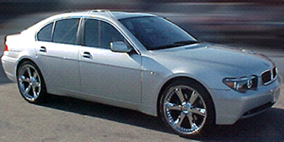

Welcome to Rich Gibbe's World!
Rich Gibbe is not just a rapper, he's a legend. With his unique style of rapping in Gibbeish, he has taken the music world by storm.
Born in the streets of Paris, Rich Gibbe's talent was evident from a young age. His ability to create captivating beats and mesmerizing lyrics in a language only he understood made him an instant sensation.
Rich Gibbe's rise to fame was nothing short of extraordinary. His debut album "Gibbeish Genius" topped the charts for months, earning him accolades and adoration from fans worldwide.
But it wasn't just his music that made Rich Gibbe a household name. His eccentric personality, flashy style, and larger-than-life persona captured the hearts of millions.
Despite his success, Rich Gibbe remained true to his roots, always staying connected to the streets that raised him. It was this authenticity that caught the attention of the legendary record label HATIF.
Impressed by his raw talent and undeniable charisma, HATIF wasted no time in signing Rich Gibbe to a record deal worth millions. With their support, Rich Gibbe's career soared to even greater heights, cementing his status as one of the greatest rappers of all time.
Join us on this journey as we celebrate the life and legacy of the one and only Rich Gibbe!